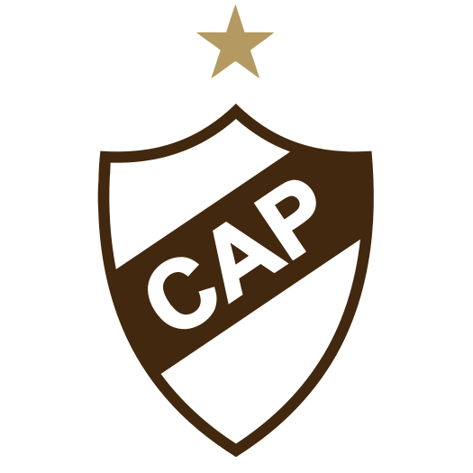
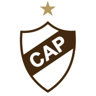

Cómo se armó este kit
El manual de marca oficial que existe (PLA-Marca-.pdf, 2013) sigue siendo válido como estructura y como reglas de uso,
pero el escudo, la tipografía real y los colores exactos cambiaron con la web nueva. Este kit toma la estructura del manual 2013
y reemplaza los assets por los que están corriendo hoy en cap.org.ar: el escudo vectorial con estrella, la tipografía institucional
(el manual la llamaba "Ghotam", probablemente un error de tipeo) y la fuente Calamar como itálica de destaque.
Escudo oficial (CAP + estrella)

Fuente: vector original en Adobe Illustrator (
platense.eps, creado 6/2/25). Este es el escudo institucional completo —
con las letras "CAP" y la estrella — pensado para uso como marca principal (indumentaria, papelería, UI).
Escudo — variante forma/fondo

Fuente:
cap.org.ar/wp-content/uploads/2026/05/escudo.svg — es solo la silueta/forma del escudo (sin las letras "CAP"),
usada como elemento decorativo o de fondo en el sitio. También hay una versión animada (Lottie) en escudo-cap.json para el header.
No reemplaza al escudo oficial de arriba — son usos distintos.
Logotipo (escudo + texto)
Fuente:
cap.org.ar/wp-content/uploads/2026/05/cap.svg — usado junto al escudo en el footer del sitio ("titulo-club").
Es el reemplazo directo del "logotipo" del manual 2013 (que antes era el texto "Club Atlético Platense" en la tipografía institucional).
Íconos y favicon

Versión recortada del escudo para favicon / ícono de app (192×192, también existen 32×32, 180×180 y 270×270 en la misma ruta con el sufijo cambiado).
Espacio mínimo y tamaño
El manual 2013 fija 7 cm de alto como medida mínima del escudo en indumentaria, y 2,5 cm de alto para el logotipo completo (escudo + texto) en aplicaciones impresas.
En digital, el sitio actual usa el escudo a 195×205 px en el header — tomalo como referencia de tamaño mínimo legible en pantalla (no bajar de ~80px de alto en UI).
Uso indebido (vigente desde 2013, verificado sobre el escudo actual)
Ejemplos ilustrativos generados para este kit (no son gráficas oficiales del club): otro color, distorsión del contorno y bajo contraste sobre fondo claro — los tres casos a evitar según las reglas de abajo.
Colores corporativos
Marrón institucional#4a2e15CSS cap.org.ar — primary
Marrón oscuro#342011CSS cap.org.ar — secondary
Dorado / destaque#bea15eCSS cap.org.ar — success (color de la estrella)
Marrón (vector escudo)#42280eescudo.svg
Dorado (vector escudo)#b49a61escudo.svg — estrella
Blanco#ffffffBase para contraste
Referencia histórica (manual 2013): marrón institucional Pantone 161C — CMYK 44/69/95/50, RGB 99/59/27 (≈ #633b1b).
Los tonos reales de la web nueva son levemente distintos pero mantienen la misma familia marrón/dorado.
Tipografía
Montserrat 300 — texto corrido
Club Atlético Platense
Montserrat 500 — subtítulos
Club Atlético Platense
Montserrat 800 — títulos destacados
CLUB ATLÉTICO PLATENSE
Calamar Italic — frases de impacto / claim
Fiel a tu pasión
Reglas de uso (vigentes desde el manual 2013)
- No añadir elementos dentro del contorno del escudo.
- No distorsionar el escudo ni el texto.
- No engrosar el trazado del escudo.
- No utilizar otra tipografía fuera de Montserrat / Calamar.
- El diseño original especifica Gotham. El prototipo público usa Montserrat (SIL OFL) porque Gotham es comercial y no puede servirse desde un servidor abierto — ver aviso legal.
- No utilizar otros colores fuera de la paleta marrón/dorado/blanco.
- No ocultar el escudo superponiéndole elementos.
- Medida mínima del escudo en indumentaria: 7 cm de alto.